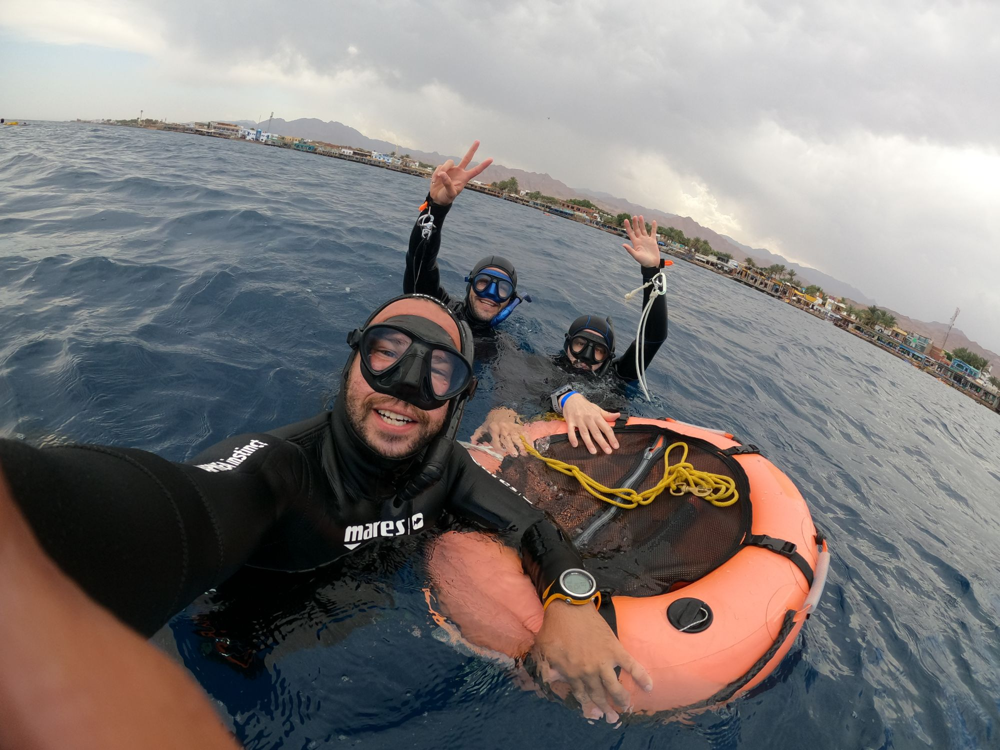

Dahab is incredible. The Philippines are incredible. Bali, Tenerife and the world's classic freediving destinations deserve their reputation. But not every time you want to dive deeper should require a long-haul flight, two weeks off work and a full expedition.
If you are already in Europe, Barcelona can be the easier answer. Come for a long weekend or a few days, train in the pool and Mediterranean, take an AIDA course or book focused coaching, then still have a city worth exploring when the fins come off.
Why Barcelona works as a freediving escape
Freediving trips are often imagined as remote destinations: somewhere tropical, somewhere far away, somewhere you need to plan months in advance. Barcelona offers something different. It is a major European city with Mediterranean water on its doorstep, so the diving does not have to replace the holiday. It can become part of it.
You can build the trip around what you actually need. A complete beginner can start with an introduction or AIDA course. A certified freediver can use the time for pool work, open-water depth sessions or technique coaching. An advanced diver can focus on equalisation, mouthfill, relaxation, mental performance or specific depth problems instead of repeating a generic course.
First experience
AIDA 1 or introduction
A compact way to discover freediving, safety, technique and breath-hold work.
Beginner certification
AIDA 2 · 2.5 days
Pool, theory and Mediterranean open-water sessions in one focused trip.
Already certified
Training & coaching
Pool, depth, equalisation, technique and personalised progression sessions.
Want more time?
Build a longer stay
Combine a course with extra training days, community sessions or private coaching.
What can you do in a few days?
If you have never freedived before
You do not need to arrive as an athlete or with a huge breath-hold. The first goal is not depth. It is learning how freediving works: relaxation, breathing, equalisation, movement and, above everything, safety.
If your trip is short, AIDA 1 gives you a one-day introduction. If you have a little more time and want a complete beginner certification with open water, AIDA 2 runs over 2.5 days.
If you are already a freediver
This is where a Barcelona trip becomes especially flexible. You do not need another certification just to make the trip worthwhile. Book pool training, open-water sessions, or private coaching around the thing that is actually holding you back.
That might be Frenzel. It might be mouthfill. It might be your duck dive, freefall, finning, relaxation, CO₂ response or the mental noise that appears when the dive starts getting serious. A few focused sessions can be more valuable than simply collecting another card.
If you want to progress to advanced or instructor level
Barcelona can also be the start of a longer progression block. Freediving Brain offers AIDA 3, AIDA 4 and AIDA Instructor training, so a short first visit can turn into a structured pathway rather than a one-off experience.

Small-group coaching, with the trip shaped around your level rather than forcing everyone into the same programme.
Come for the diving. Stay for Barcelona.
This is the part that makes the idea work differently from a traditional freediving camp. Your non-diving time is not dead time.
Finish a pool session and you are still in Barcelona. Have dinner, walk the city, meet friends, go to the beach, explore a neighbourhood, or simply recover before the next day. If you travel with a partner who does not freedive, they do not have to spend the whole trip waiting at a remote dive site.
For many European travellers, that makes a short freediving holiday much easier to justify. It can be training and a holiday at the same time, without needing to disappear to the other side of the world every time you want meaningful time in the water.
A freediving trip that fits your level
There is no single “Barcelona freediving weekend” that works for everyone. A first-timer and a 40-metre diver should not have the same schedule. That is why the better way to plan the trip is to start with your current level and what you want to leave Barcelona having improved.
You might come for:
Learn
Start freediving safely
Beginner AIDA courses and introductory sessions.
Train
Use the trip to progress
Pool and depth training for certified freedivers.
Fix
Work on a specific limitation
Equalisation, technique, relaxation or mental-performance coaching.
Connect
Meet the local community
Train with buddies and connect through the Barcelona freediving community.
Planning your Barcelona freediving break
If you are travelling specifically to dive, tell us your dates, certification level, experience and goal before you book the rest of the trip. Open-water plans always depend on conditions, so keeping some flexibility around the sea sessions makes the experience better.
If you need a certification, start with the course options. If you are already certified, start with training in Barcelona. And if you mainly want to meet people and find buddies while you are here, check the Barcelona freediving community.